Gaussian计算案例
结构优化
GaussView6.0：
输入文件格式：nprocshared–核；mem–内存；%chk–检查点文件；#p–计算类型；opt–优化；

输入文件编辑完成后，用Gaussian16打开进行计算。
Gaussian16计算完成后，通过Utilities–FormChk，将.chk文件转换为.fch文件格式
.chk文件格式无法通过记事本形式打开，会出现乱码；.fch文件格式可以通过记事本形式打开##
Gaussian16：
打开.chk，最好是.fch文件，即可观察到优化后的分子模型。
.chk是过程文件；.out是最终输出文件
.out文件：
通过文本编辑器将.out输出文件打开，里面包含所需的各种数据信息。
cycle为循环次数，error收敛至D^-8^数量级时将停止计算，返回进行各项条件验证。
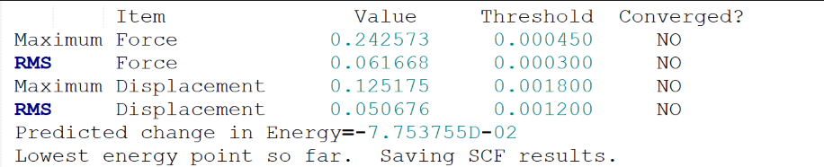
对力和位移所需要的条件进行对比，条件符合，循环停止，计算停止，输出最后计算结果；条件不符合，重启循环，循环次数+1，循环完成后再次进行对比。
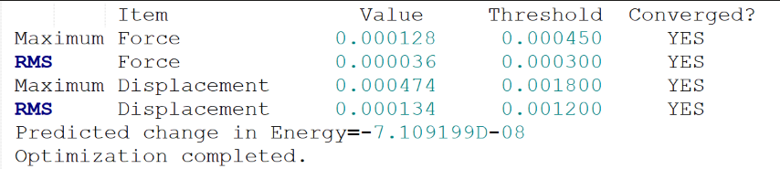
当所需条件全部满足后，循环停止，计算停止，出现Optimization completed，代表优化过程结束，之后输出数据即为优化后所得各项数据。
距离矩阵：
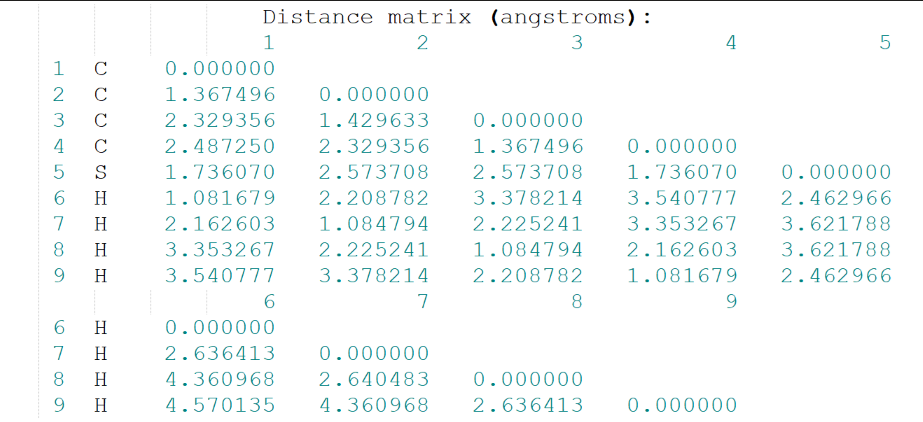
轨道对称性：

Mulliken电荷：
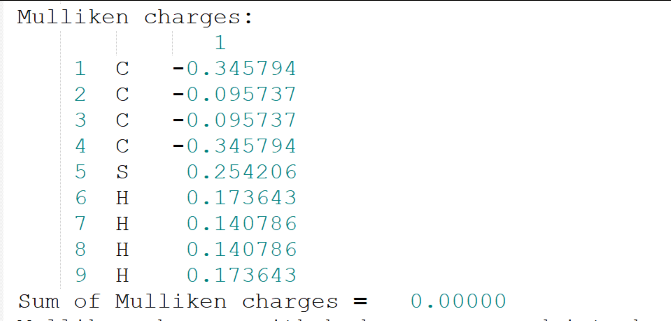
偶极矩&多极矩：
 Hartree-Fock能量：
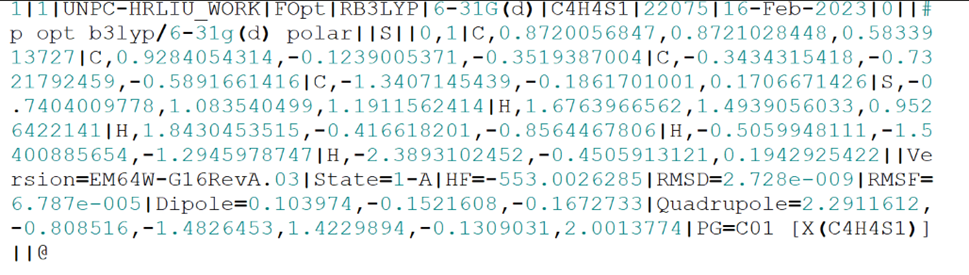
此项代表计算过程无误正式结束：
Hartree-Fock能量：
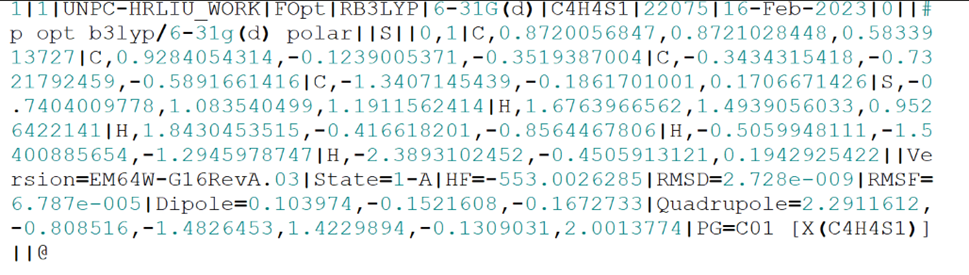
此项代表计算过程无误正式结束：
原子单位(a.u,)*27.2114 = 电子伏(eV)##
*gap = |HOMO - LUMO| 能隙分子从基态到激发态所需的最小能量，代表着分子被激发的难易程度##
振动光谱（ IR&Raman ）
GaussView6.0：
同理，在优化后的.out文件上进行计算文件编辑，得到raram.gjf文件。
输入文件设置如下：
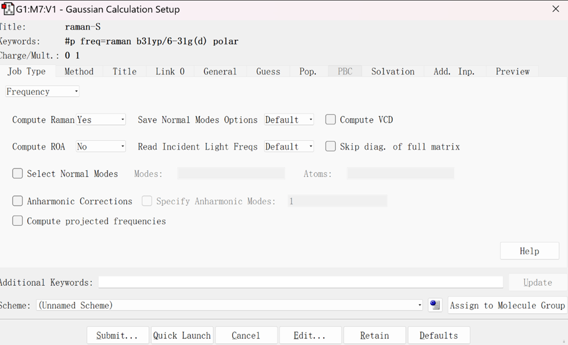
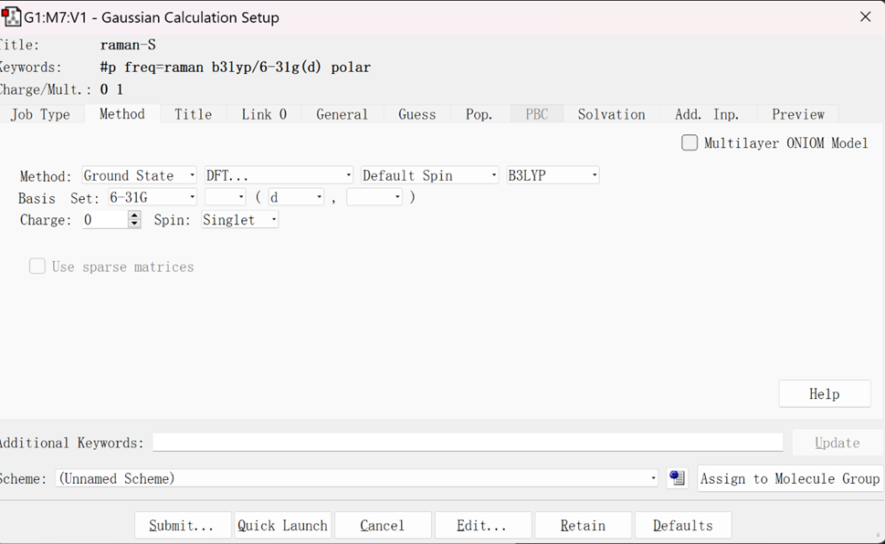
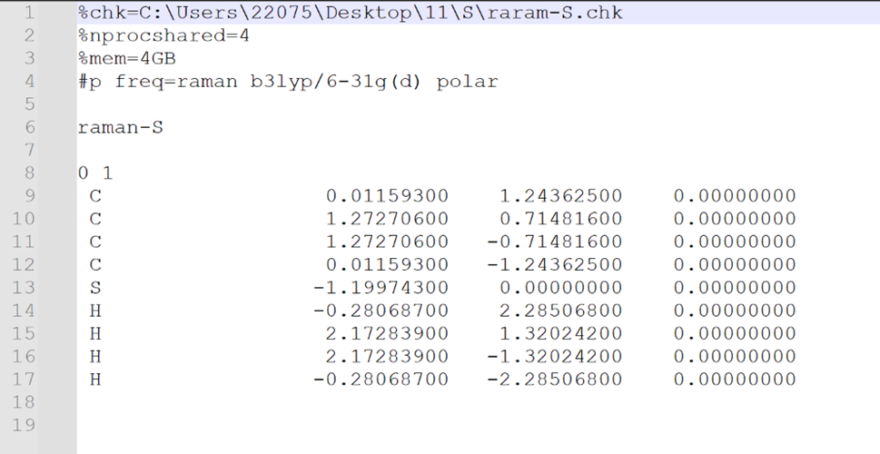
选择Frequency选项进行计算
输入文件编辑完成后，用Gaussian16打开进行计算。
Gaussian16计算完成后，通过Utilities–FormChk，将.chk文件转换为.fch文件格式。
.chk文件格式无法通过记事本形式打开，会出现乱码；.fch文件格式可以通过记事本形式打开
Gaussian16：
打开.out文件，在Results选项中选择Vibartions选项，再选择Spectrum选项，即可得到该分子体系的红外光谱和拉曼活性光谱，如下所示：

通过光谱寻找感兴趣的模式，在Vibartions选项中可以观察分子振动等各项情况，如下图所示：
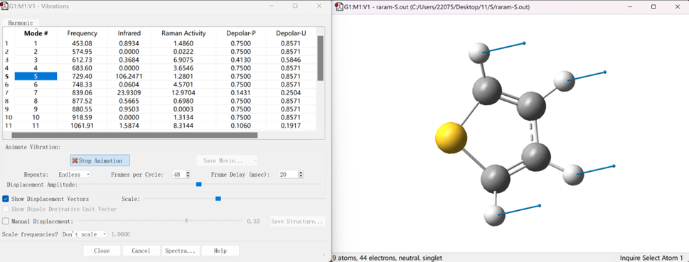
点击鼠标右键，选择Save Data，即可将分子光谱数据保存为文本格式，后续可采用Origin软件进行绘图编辑，保存数据格式如下：


注意：
==我们要对频率一项进行检查，确保没有虚频模式的存在，即频率数值为负数。==

若有虚频模式存在，需重新调整一下分子的几何结构模型，从头开始优化，重复上述过程，直至虚频模式消失。
紫外—可见光光谱（ UV-Vis ）
进行光谱计算前，要先完成基态能量优化步骤，在所生成的.out文件基础之上进行计算的设计，保存为td.gjf文件，进行UV-Vis计算##
GaussView6.0：
输入文件格式: nprocshared=核数；mem=内存##
Method模块：N=n 激发态数；root=m 感兴趣激发态。

选择Energy选项进行计算
输入文件编辑完成后，用Gaussian16打开进行计算。
Gaussian16计算完成后，通过Utilities–FormChk，将.chk文件转换为.fch文件格式。
.chk文件格式无法通过记事本形式打开，会出现乱码；.fch文件格式可以通过记事本形式打开##
Gaussian16：
打开.out文件，在Results选项中选择UV-Vis选项，即可得到该分子体系的紫外-可见光光谱，如下所示：
上图为紫外-可见光光谱；下图为电子圆二色性谱

点击鼠标右键，选择Save Data，即可将分子光谱数据保存为文本格式，后续可采用Origin软件进行绘图编辑，保存数据格式如下：
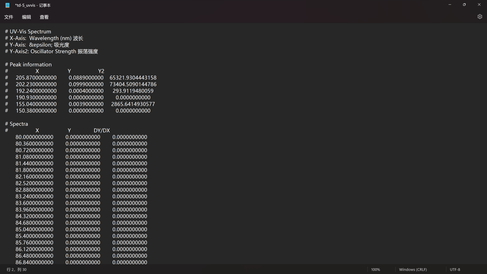
.out文件：
对.out文件进行分析，我们可以得到很有有用的信息。
关于分子体系激发态的一些信息如下图所示：
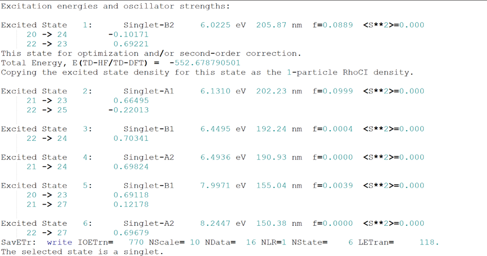